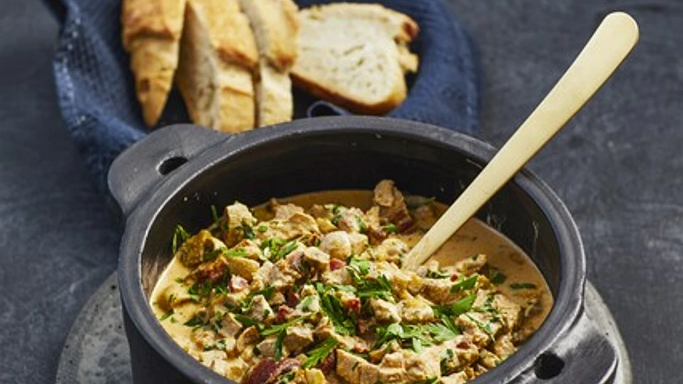

Filettopf aus Schweinefilet

15min
simpel
15.11.2025
| 1 kg | Schweinefilet |
| 1 EL | Öl |
| 1 EL | Butter |
| 2 große | Zwiebel(n) |
| 1 | Knoblauchzehe(n) |
| 100 g | Katenschinken |
| 500 g | Champignons |
| 200 ml | Fleischbrühe |
| 200 ml | Sahne |
| 200 g | Crème fraîche |
| 1 EL | Tomatenmark |
| 1 TL | Senf |
| 1 Bund | gehackte Petersilie |
Zubereitung
1. Vom Schweinefilet die weiße Haut entfernen. Das Öl mit der Butter erhitzen, nicht zu heiß werden lassen. Das Fleisch mit Salz und Pfeffer würzen und ca. 10 Minuten von allen Seiten braten. Es soll innen noch rosa sein. Dann herausnehmen und auf einem Teller (damit der Fleischsaft aufgefangen wird) erkalten lassen.
2. Im Bratfett Zwiebeln, Knoblauch und Schinken gut bräunen. Die Champignons putzen und in Scheiben schneiden und mitbraten. Dann mit Brühe ablöschen und Sahne und Crème fraîche oder Schmand und den ausgetretenen Fleischsaft zugeben. Die Soße mit Salz, Pfeffer, Tomatenmark und Senf kräftig abschmecken. Sollte sie zu flüssig sein, etwas Speisestärke in wenig kaltem Wasser anrühren und unter Rühren bis zur gewünschten Konsistenz zur kochenden Soße geben. Die Soße abkühlen lassen.
3. Das kalte Fleisch erst in 1 cm breite Scheiben und dann in Streifen schneiden. Dann in die Soße geben, die Petersilie zufügen und durchrühren, kühl stellen.
4. Am nächsten Tag das Gericht auf kleiner Flamme erhitzen, jedoch nicht mehr kochen. So bleibt das Fleisch rosa. Die Soße nochmals abschmecken.
Dazu schmeckt Baguette, aber auch Spätzle und Salat.Rezept erstellt von
 Marvin
Marvin